The Towers: Make a 6x6 square out of cobblestone, on of the ground, not in it. Then, make a floor in the ground out of stone. Build up so that the tower is 16 blocks tall, then put in stone floors so that the tower has 4 stories, each room 3 blocks tall. Use ladders to get from one story to the other. Then, at the top, put one layer of cobblestone where the cobblestone is. Then put one block of cobblestone on each corner. Finally, place 2 cobblestone blocks in a line in between the corners as on the picture. 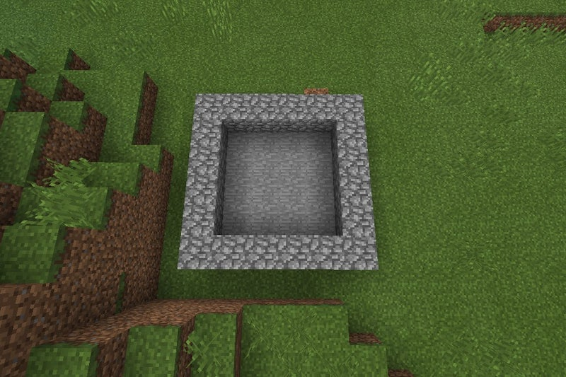 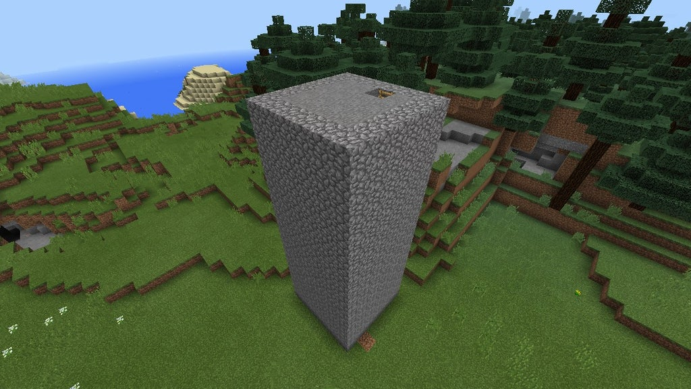 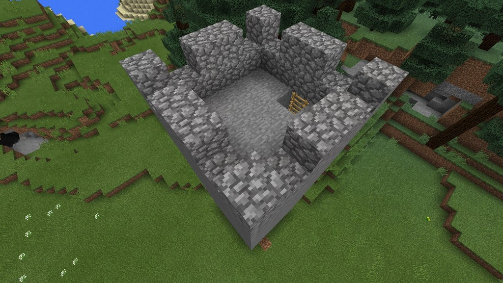
Make 3 more towers so that they form a square, each 26 blocks apart. Then, make wall connecting the towers to that it is in the exact middle. Each wall should be 15 blocks tall. Then, make a walkway so that it is coming off the wall and coming out to the left. and each walkway should have stairs leading down to the top room of each tower. Doors are optional. 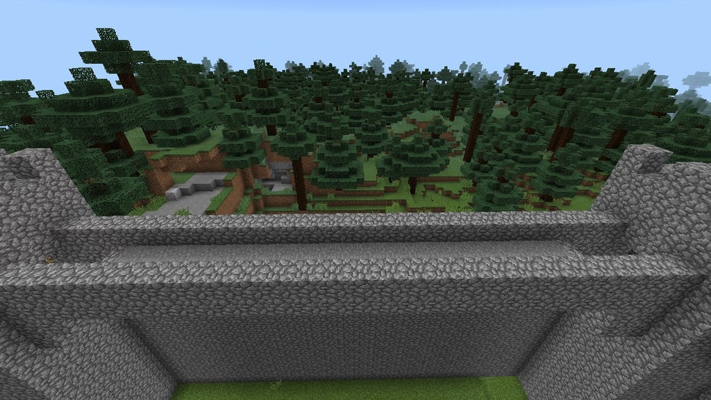 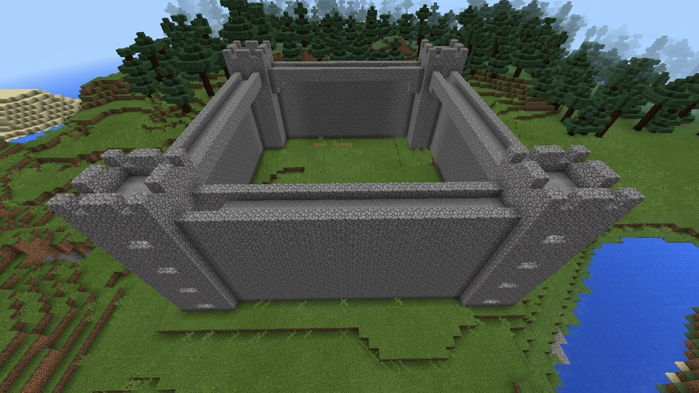 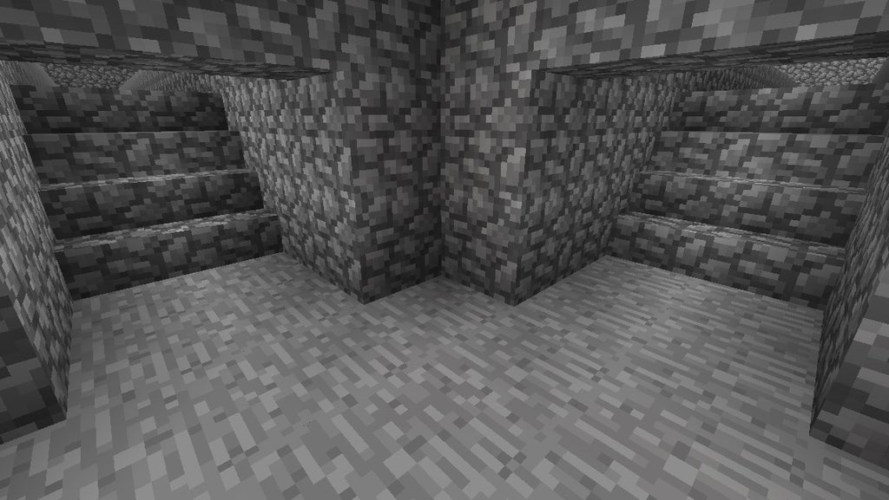
Now, make the interior of your castle. The floor should be stone. 7 blocks coming out of the side walls should be a 10 block high cobblestone wall. Make 10 block tall 2x2 pillars using stone bricks with stone stairs on each side at the bottom (put glowstone on the corners). Make 8 pillars (4 on each side starting with the pillar closest to the back wall that's two blocks away from it) that are two blocks apart. Add some carpet that leads to the throne. After this, put oak wood coming out of the top two blocks on each pillar. The wood should connect all the pillars horizontally and vertically and connect with all the walls. At the top of the side walls should be windows. 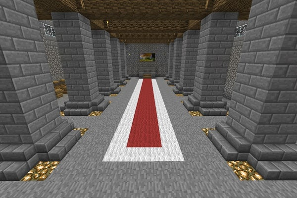 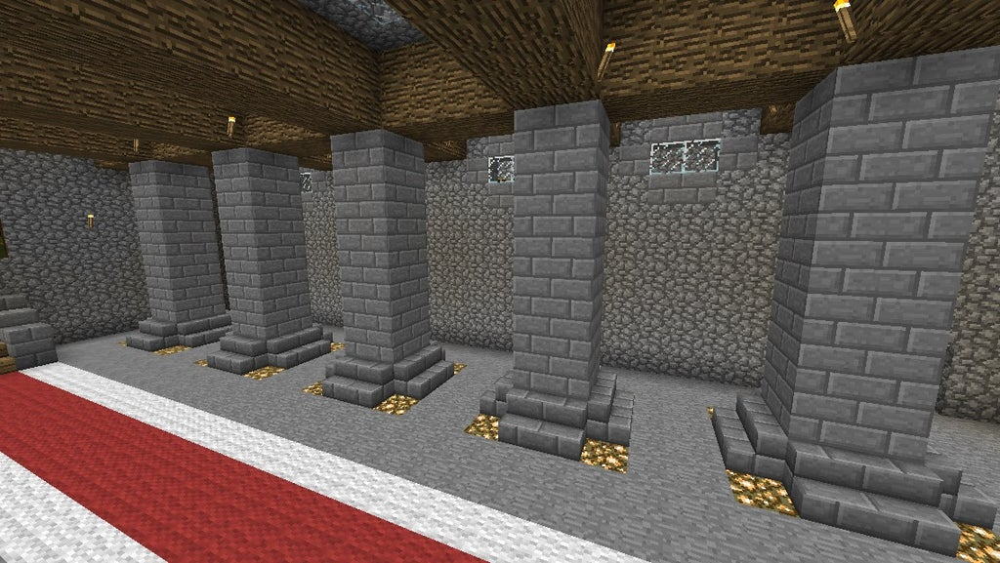
On top of the pillars build the cobblestone roof. In between the oak wood squares on the ceiling should be windows. On top of the pillars build the cobblestone roof. 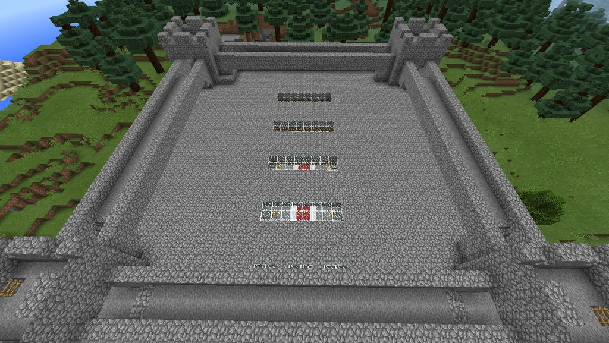 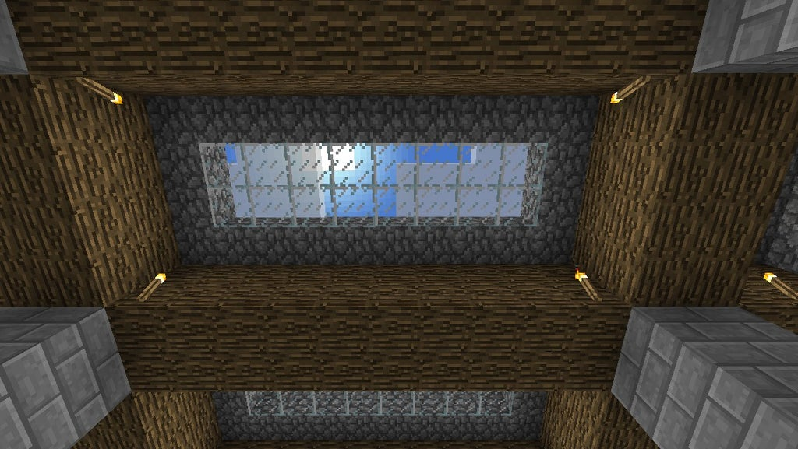
Finally, make the rooms. Put a dining room open to the main room on one side of the castle. On the other side put bedrooms,a kitchen, and any other rooms you want. Be sure to leave space for rooms above them where the walls' windows are. In a corner of the castle put an opening to a set of stairs where you can access the upstairs rooms. Lower tower room walls may be opened for better access to the castle. The tower rooms may be made into anything such as the guards' bedrooms. 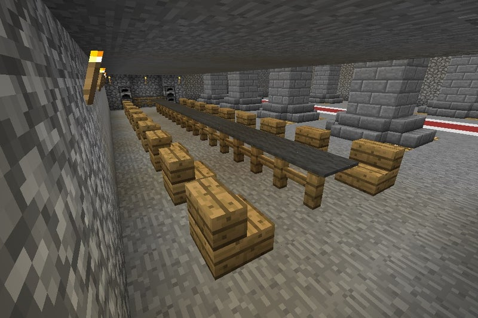 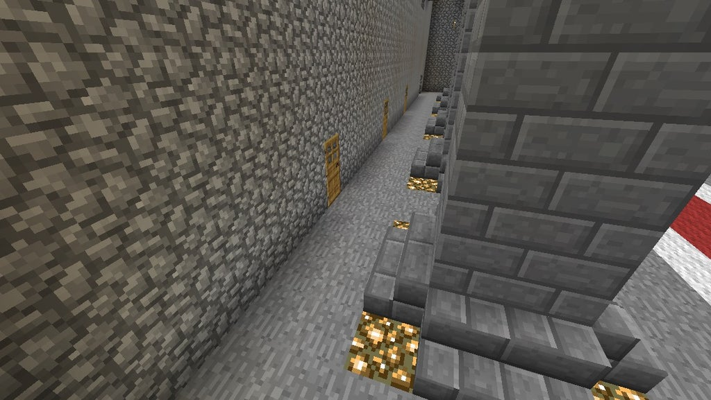 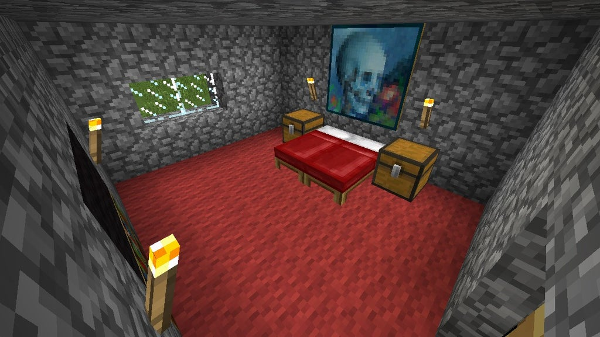 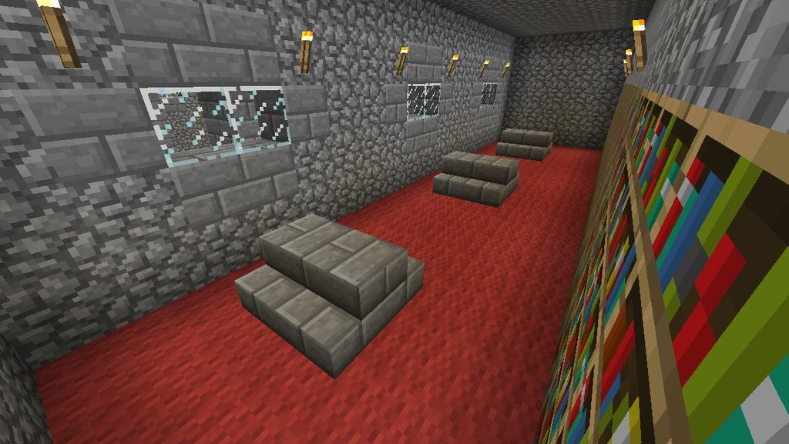 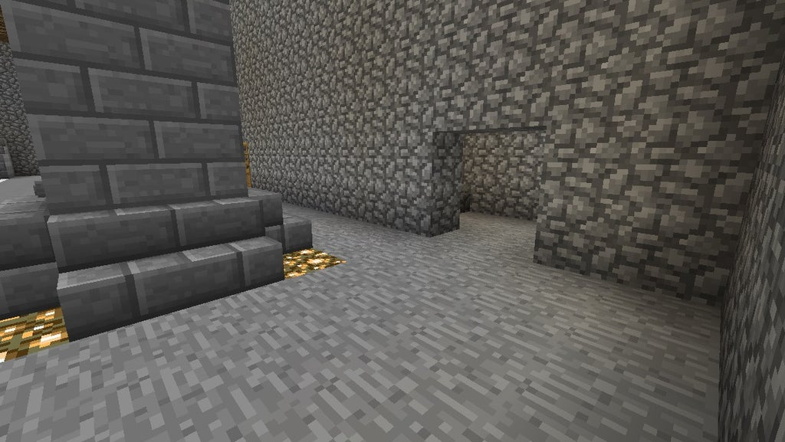 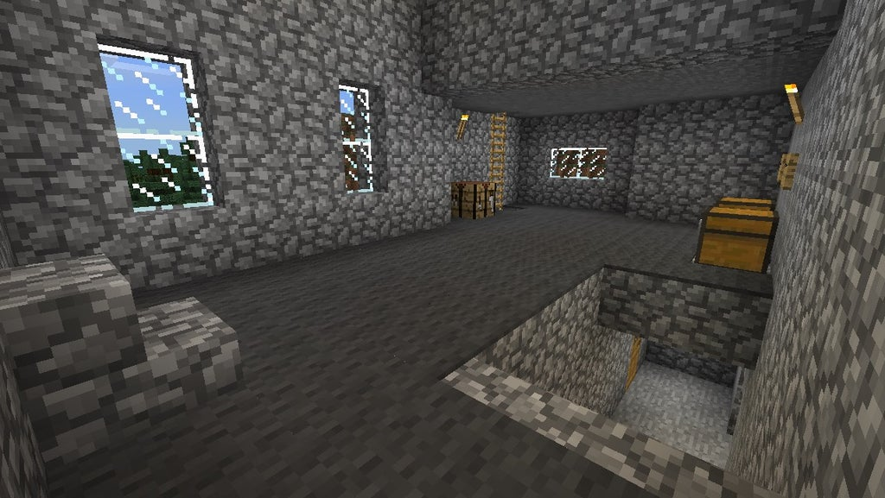
Decorate the exterior of the castle any way you want. Put windows on the towers so the castle feels more open. The top of the roof may also be made into things as long as you don't cover up the windows. 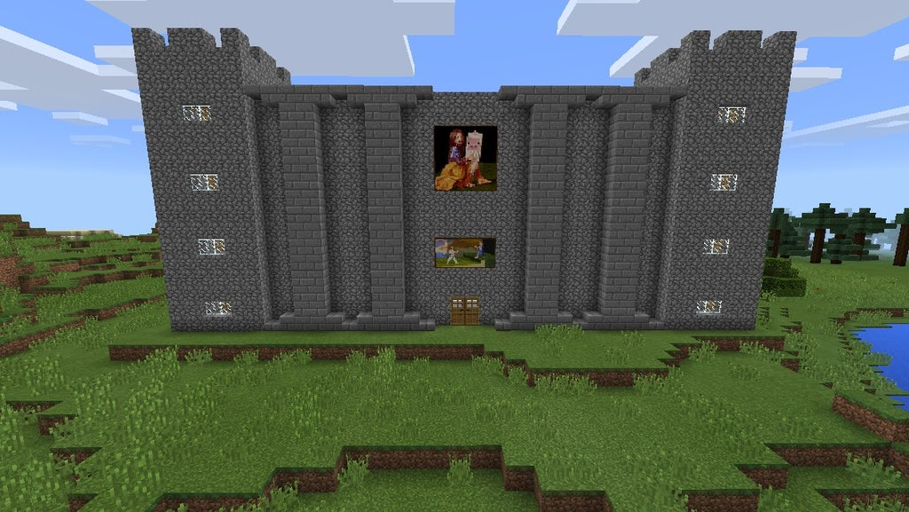